Number relationships fascinate humans, including those that at first suggest and/or then can be made into an arrangement of points representing numbers into series of geometrical figures. Such figurate or polygonal numbers, were of great interest to the Pythagoreans (c. 500 BCE). Indeed, to them numbers were of paramount significance; everything could be explained by numbers, and numbers were invested with specific characteristics and personalities. Among other properties of numbers, the Pythagoreans recognized that numbers had “shapes.” Thus, the triangular numbers, 1, 3, 6, 10, 15, 21, etc., were visualized as points or dots arranged in the shape of a triangle.
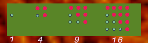
Consecutive Triangular Numbers add to Square Numbers
Square Numbers are the squares of natural numbers. The Square Numbers of 1, 4, 9, 16, 25, etc. can also be represented by square arrays of dots, as shown in the diagram. Notably, we notice that the sum of any two adjacent Triangular Numbers is a Square Number.
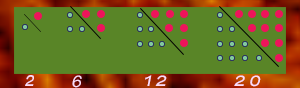
Oblong numbers made via doubling Triangular Numbers
Oblong Numbers are the numbers of dots that can be placed in rows and columns in a rectangular array, each row has one more dot than does each column. The first few oblong numbers are 2, 6, 12, 20, and 30.
Notably, this series of numbers is 1) the successive sums of the series of even numbers, or 2) the products of two consecutive numbers:
2 = 1·2
6 = 2·3 = 2 + 4
12 = 3·4 = 2 + 4 + 6
20 = 4·5 = 2 + 4 + 6 + 8
Also, an oblong number may also be formed by doubling, visually or mathematically, any triangular number.
Gnomon figures are geometric figures formed by removing a similar parallelogram from a corner of a larger parallelogram; or, more generally, a figure that, added to a given figure, makes a larger figure of the same shape. Mathemataically, it reflects the addition of odd numbers/odd numbers of balls. The shape can be represented by a right angle, or a carpenter’s square, as illustrated in Figure 3.
Gnomons were extremely useful to the Pythagoreans. They could build up squares by adding gnomons to smaller squares and from such a figure could deduce many interrelationships:
12 + 3 = 22
22 + 5 = 32
32 + 7 = 42
42 + 9 = 52
1 + 3 + 5 = 32
1 + 3 + 5 + 7 = 42
1 + 3 + 5 + 7 + 9 = 52
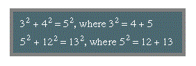
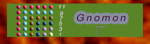
Gnomons show Odd Numbers
Thus and, in general, a2 + b2 = c2, where a2 = b + c. This is a special class of Pythagorean triples (see below Pythagorean triples).
Besides these, the Greeks also studied numbers having pentagonal, hexagonal, and other shapes. Many relationships can be shown to exist between these geometric patterns and algebraic expressions.
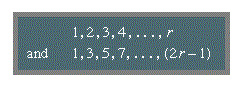
Polygonal numbers constitute a subdivision of a class of numbers known as figurate numbers. Examples include the arithmetic sequences:
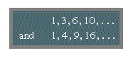
When new series are formed from the sums of the terms of these series, the results are, respectively:
These series are not arithmetic sequences but are seen to be the polygonal triangular and square numbers. Polygonal number series can also be added to form threedimensional figurate numbers; these sequences are called pyramidal numbers.
Pythagorean Numbers are important not only in their relation to the modern theory of numbers, with elementary properties and relations of numbers often demanding sophisticated mathematical tools. Thus, it has been shown that every integer is either a Triangular Number, the sum of two Triangular Numbers, or the sum of three Triangular Numbers: e.g., 8 = 1 + 1 + 6, 42 = 6 + 36, 43 = 15 + 28, 44 = 6 + 10 + 28.
Pythagorean Triples
The study of Pythagorean Triples as well as the general theorem of Pythagoras leads to many unexpected byways in mathematics. A Pythagorean Triple is formed by the measures of the sides of an integral right triangle — i.e., any set of three positive integers such that a2 + b2 = c2. If a, b, and c are relatively prime — i.e., if no two of them have a common factor — the set is a Primitive Pythagorean Triple.
A formula for generating all Primitive Pythagorean Triples is as left, in which p and q are relatively prime, p and q are neither both even nor both odd, and p > q. By choosing p and q appropriately, for example, Primitive Pythagorean Triples such as the following are obtained.
The only primitive triple that consists of consecutive integers is 3, 4, 5.
Certain characteristic properties are of interest:
Either a or b is divisible by 3.
Either a or b is divisible by 4.
Either a or b or c is divisible by 5.
The product of a, b, and c is divisible by 60.
One of the quantities a, b, a + b, a - b is divisible by 7.
It is also true that if n is any integer, then 2n + 1, 2n2 + 2n, and 2n2 + 2n + 1 form a Pythagorean triple.
Certain properties of Pythagorean triples were known to the ancient Greeks—e.g., that the hypotenuse of a primitive triple is always an odd integer. It is now known that an odd integer R is the hypotenuse of such a triple if and only if every prime factor of R is of the form 4k + 1, where k is a positive integer.
Notice in blue that a2 + b2 = c2, where a2 = b + c. This is a special class of Pythagorean Triples, formed when the co-primes p and q are sequential. However, when
a2 =/= b + c, then the greatest common denominator is b + c, except in the Primitive Pythagorean Triples where the greatest common denominator is p + q. This continuing "closing of the loop" in these Figurative Number and Pythagorean Number schemes do indeed point to a Sacred Geometry, a language that is internally coherent, and humans are able to assess, given their language and cognitive structures, this coherence.
Fibonacci Numbers
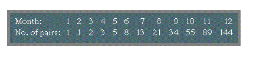
In 1202 the mathematician Leonardo of Pisa, also called Fibonacci, published an influential treatise, Liber abaci. It contained the following recreational problem: “How many pairs of rabbits can be produced from a single pair in one year if it is assumed that every month each pair begets a new pair which from the second month becomes productive?” Straightforward calculation generates the following sequence:
The second row represents the first 12 terms of the sequence now known by Fibonacci’s name, in which each term (except the first two) is found by adding the two terms immediately preceding; in general, xn = xn − 1 + xn − 2, a relation that was not recognized until about 1600.
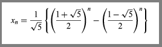
Over the years, especially in the middle decades of the 20th century, the properties of the Fibonacci Numbers have been extensively studied, resulting in a considerable literature. Their properties seem inexhaustible; for example, xn + 1 · xn − 1 = xn2 + (−1)n. Another formula for generating the Fibonacci numbers is attributed to Édouard Lucas:
The ratio (Square root of √5 + 1) : 2 = 1.618 . . ., designated as Φ, is known as the Golden Number; the ratio (Square root of √5 − 1) : 2, the reciprocal of Φ, is equal to 0.618 . . . . Both these ratios are related to the roots of x2 − x − 1 = 0, an equation derived from the Divine Proportion of the 15th-century Italian mathematician Luca Pacioli, namely, a/b = b/(a + b), when a < b, by setting x = b/a. In short, dividing a segment into two parts in mean and extreme proportion, so that the smaller part is to the larger part as the larger is to the entire segment, yields the so-called Golden Section, an important concept in both ancient and modern artistic and architectural design. Thus, a rectangle the sides of which are in the approximate ratio of 3 : 5 (Φ−1 = 0.618 . . .), or 8 : 5 (Φ = 1.618 . . .), has the most aesthetically pleasing proportions.
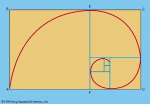
Figure 4: Golden rectangles and the logarithmic spiral.
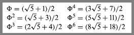
Raising the Golden Number to successive powers generates the sequence that begins as follows:
In this sequence the successive coefficients of the radical Square root of √5 are Fibonacci’s 1, 1, 2, 3, 5, 8, while the successive second terms within the parentheses are the Lucas Sequence: 1, 3, 4, 7, 11, 18. The Lucas Sequence shares the recursive relation of the Fibonacci Sequence; that is, xn = xn − 1 + xn − 2.
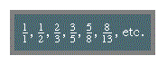
If a golden rectangle ABCD is drawn and a square ABEF is removed, the remaining rectangle ECDF is also a golden rectangle. If this process is continued and circular arcs are drawn, the curve formed approximates the logarithmic spiral, a form found in nature (see Figure 4). The logarithmic spiral is the graph of the equation r = kΘ, in polar coordinates, where k = Φ2/π. The Fibonacci Numbers are also exemplified by the botanical phenomenon known as phyllotaxis. Thus, the arrangement of the whorls on a pinecone or pineapple, of petals on a sunflower, and of branches from some stems follows a sequence of Fibonacci Numbers or the series of fractions: